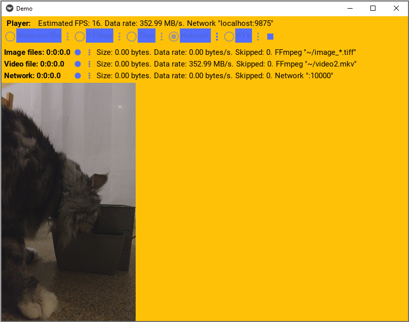

Getting Started¶
Introduction¶
cpl_media provides a abstract cpl_media.player.BasePlayer and
cpl_media.recorder.BaseRecorder class.
The player provides an API that can
be implemented by cameras or other media sources to play video images into
cpl_media.player.BasePlayer.frame_callbacks. Examples cameras are USB webcams,
video files, Thor and Point Gray cameras. Also, playing video from network
streaming.
Recorders provides an API that accepts images from a player through
cpl_media.player.BasePlayer.frame_callbacks and records them somewhere.
Example recorders are saving to videos files, saving to images, or
streaming video to the network.
We also provide Kivy widgets to configure each of the players/recorders, which can be used in a Kivy app to configure and play/record.
Usage¶
To use cpl_media, you first need to install it, see Installation.
After it’s installed, it can be used like any python library. Complete API documentation is at The CPL_Media API.
We provide a Demo App app that uses all the players and recorders that demos its usage.
Screenshots¶
The following image shows a screenshot of the demo app playing a video file and streaming it to the network as a server.

The following image shows a screenshot of the demo app playing the video being streamed by the server, by acting as a client of the server.
